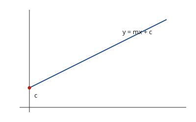

<script>if(location.hostname.endsWith('onrender.com'))location.replace('https://math-sandbox.pages.dev'+location.pathname+location.search+location.hash)</script>
<section class="theory" data-section="P1-3.3">
<h2>3.3 Equations of straight lines</h2>
<p class="src">Based on Cambridge International AS &amp; A Level Mathematics: Pure Mathematics 1 Coursebook (Sue Pemberton), Chapter 3, printed pp.78–82 (equations of straight lines). Printed pages were read from P1.pdf (printed 78–82 = PDF 90–94). Own wording and new numbers. Teaching stops before 3.4 The equation of a circle on printed p.82.</p>
<p class="key-words"><strong>Key words:</strong> <em>equation of a straight line</em>, <em>gradient of a straight line</em></p>
<p>The <strong>equation of a straight line</strong> may be written as \(y=mx+c\), where \(m\) is the gradient of a straight line and \(c\) is the \(y\)-intercept, when the line is not vertical. A vertical line has equation \(x=b\). If the gradient and a point \((x_1,y_1)\) are known, the equation is \(y-y_1=m(x-x_1)\).</p>
<figure>

<figcaption>The line \(y=mx+c\) meets the \(y\)-axis at \((0,c)\).</figcaption>
</figure>
<div class="worked-example"><h4>Worked example 1</h4>
<p class="src">Book: Key point 3.4 style, printed pp.78–82. New numbers.</p>
<p>A straight line has gradient \(2\) and \(y\)-intercept \(3\). What is the \(y\)-intercept of the line \(y=2x+3\)?</p>
<ol class="steps">
<li>The \(y\)-intercept is already \(3\). <span class="mark">A1</span></li>
</ol></div>
<div class="worked-example"><h4>Worked example 2</h4>
<p class="src">Book: Key point 3.5, a line through two points. New numbers.</p>
<p>The points \(A(1, 4)\) and \(B(3, 8)\) lie on a straight line. Find the \(y\)-intercept of the line \(AB\).</p>
<ol class="steps">
<li>The gradient is \(\dfrac{8-4}{3-1}=2\). <span class="mark">M1</span></li>
<li>Using \(y-4=2(x-1)\) gives \(y=2x+2\), so the \(y\)-intercept is \(2\). <span class="mark">A1</span></li>
</ol></div>
<h3>Common mistakes</h3><ul>
<li>Writing \(y=mx+c\) with \(c\) taken from a point that does not lie on the \(y\)-axis.</li>
<li>Finding the gradient with the differences of \(x\) and \(y\) the wrong way around.</li>
</ul>
<div class="quick-check" data-q="QC1">
<h4>Quick check 1</h4>
<p>A straight line has equation \(y=2x+3\). What is the \(y\)-intercept?</p>
<details>
<summary>Show answer</summary>
<ol class="steps">
<li>The \(y\)-intercept is \(3\). <span class="mark">A1</span></li>
</ol>
<p class="final">\(3\)</p>
</details>
</div>
<div class="quick-check" data-q="QC2">
<h4>Quick check 2</h4>
<p>The points \(A(1, 4)\) and \(B(3, 8)\) lie on a straight line. What is the \(y\)-intercept of the line \(AB\)?</p>
<details>
<summary>Show answer</summary>
<ol class="steps">
<li>Gradient \(=\dfrac{8-4}{3-1}=2\), so \(y-4=2(x-1)\) and the \(y\)-intercept is \(2\). <span class="mark">A1</span></li>
</ol>
<p class="final">\(2\)</p>
</details>
</div>
<div class="quick-check" data-q="QC3">
<h4>Quick check 3</h4>
<p>A straight line has equation \(y=x-3\). What is the \(y\)-intercept?</p>
<details>
<summary>Show answer</summary>
<ol class="steps">
<li>The \(y\)-intercept is \(-3\). <span class="mark">A1</span></li>
</ol>
<p class="final">\(-3\)</p>
</details>
</div>
<h3>Past paper</h3>
<p class="src">9709/12/F/M/23 Question 11(a) only, 2 marks. Official QP and MS. Later parts of Question 11 are volume of revolution and are omitted. Question 2 of this paper was already used in P1-2.8.</p>
<p>The diagram shows the curve with equation \(x=y^2+1\). The points \(A(5, 2)\) and \(B(2, -1)\) lie on the curve.</p>
<p>(a) Find an equation of the line \(AB\). [2]</p>
<details><summary>Show official scheme</summary>
<ol class="steps">
<li>Gradient of \(AB=\dfrac{2-(-1)}{5-2}\). Official MS: M1, expect 1. <span class="mark">M1</span></li>
<li>Equation of \(AB\) is \(y-2=1(x-5)\) or \(y+1=1(x-2)\), so \(y=x-3\). Official MS: A1, or equivalent. <span class="mark">A1</span></li>
</ol></details>
</section>
